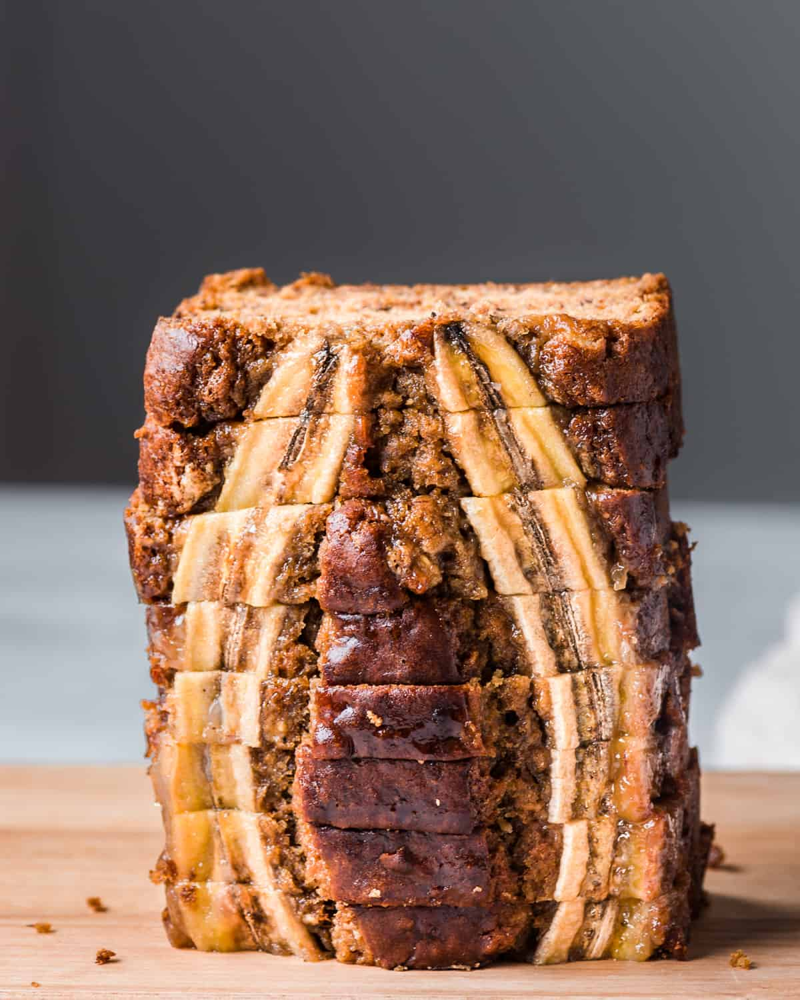

Banana Bread

Description
One of the most nostalgic treats has got to be a slice of soft banana bread
slathered in butter, and this Vegan Banana Bread is sure to evoke those
fuzzy childhood memories.
You'll never notice it's vegan, egg-free, and dairy-free because it has the
most delectable, moist and even fluffy texture. And it's called the best banana
bread for good reason, too. All you need are 10 ingredients and 20 minutes of hands-on time.
Ingredients
- 6 tablespoons (90 mL) aquafaba
- 3 medium-sized very ripe bananas, (optional, 1 ripe banana for decoration)
- 1/4 cup + 2 tablespoons (90 mL) oat milk, or plain-flavored plant-based milk of choice
- 1 tablespoon lemon juice
- 1/3 cup (75g) sunflower oil, olive oil, or any neutral-tasting oil
- 3/4 cup (115g) organic brown sugar or coconut sugar (see Note 2)
- 1 teaspoon pure vanilla extract (see Note 3)
- 2 cups (240 to 250g) all-purpose flour, spooned and leveled (see Note 4)
- 1/4 teaspoon sea salt
- 1 teaspoon baking soda
- 3/4 teaspoon ground cinnamon
Steps
- Preheat the oven to 350°F/176°C. Arrange a rack in the bottom third of
the oven. Line a 9x5-inch (23x13 cm) loaf pan with parchment paper, letting
the excess hang over the long sides to form a sling.
- Pour the aquafaba into a medium bowl. Using a handheld electric mixer,
whip the aquafaba on medium speed for 45-60 seconds until uniformly foamy.
- Wipe out the bowl used for the aquafaba. Add the three bananas to the bowl and
mash with a fork until smooth and no lumps remain (or, for a more rustic banana
bread, leave a few chunks in). FYI: the 3 mashed bananas should weigh around 300g.
- Stir the lemon juice into the oat milk and set aside. This is the vegan "buttermilk."
- In a large mixing bowl, add the sugar and oil. Mix using the electric mixer or a whisk until well combined.
- Add the whipped aquafaba and mix until well incorporated. Add in the vegan "buttermilk" and vanilla and mix until smooth.
Add the mashed bananas and mix until well incorporated.
- Add the flour, salt, baking soda, and cinnamon to the wet ingredients. Switch to using a silicone spatula
(if you don't have one, use a large wooden spoon). Gently stir until the ingredients are just barely combined.
It's okay if you can see a few traces of flour.
- Pour the batter into the prepared loaf pan and smooth out the top of the batter
using a spatula or spoon.
- For the optional decoration, keep the peel on the reserved banana and slice it in half, lengthwise;
then peel the banana. Sprinkle a little coconut sugar or brown sugar on the cut/interior sides of the banana.
Gently arrange the bananas on top the batter, sugared side side up.
NOTE: This might create a dome in the middle of the bananas, where the batter bunches up in the middle. Use a spoon to move some of the batter around the pan so that the bread doesn't bake unevenly.
- Bake in the preheated oven for 45 to 55 minutes. Since every home oven differs, I like to start checking at 45 minutes.
The banana bread is done when a toothpick inserted into the center top at a slight angle comes out a few moist crumbs.
If there's runny batter, it needs more time.
- Transfer the pan to a wire rack and cool for 10 minutes. Then remove the bread from the
pan and cool on the rack for at least 20 to 30 minutes before slicing
(the bread is still cooking and setting up, so don't slice too early).
- To store, place completely cooled banana bread in an airtight container or wrap tightly in plastic and leave on the counter for 2-4 days (if using decorative banana topping, the topping a will start to brown after day 1).
You can also freeze the banana bread. If you freeze the whole loaf, allow it to defrost on the countertop for 2-3 hours. If you freeze individual slices, defrost on the countertop for 20-30 minutes.